Mastercraft Motors
One shop, two brands. Cleaning up a family auto shop's search presence and separating a tangled listing so the right customers find the right service.
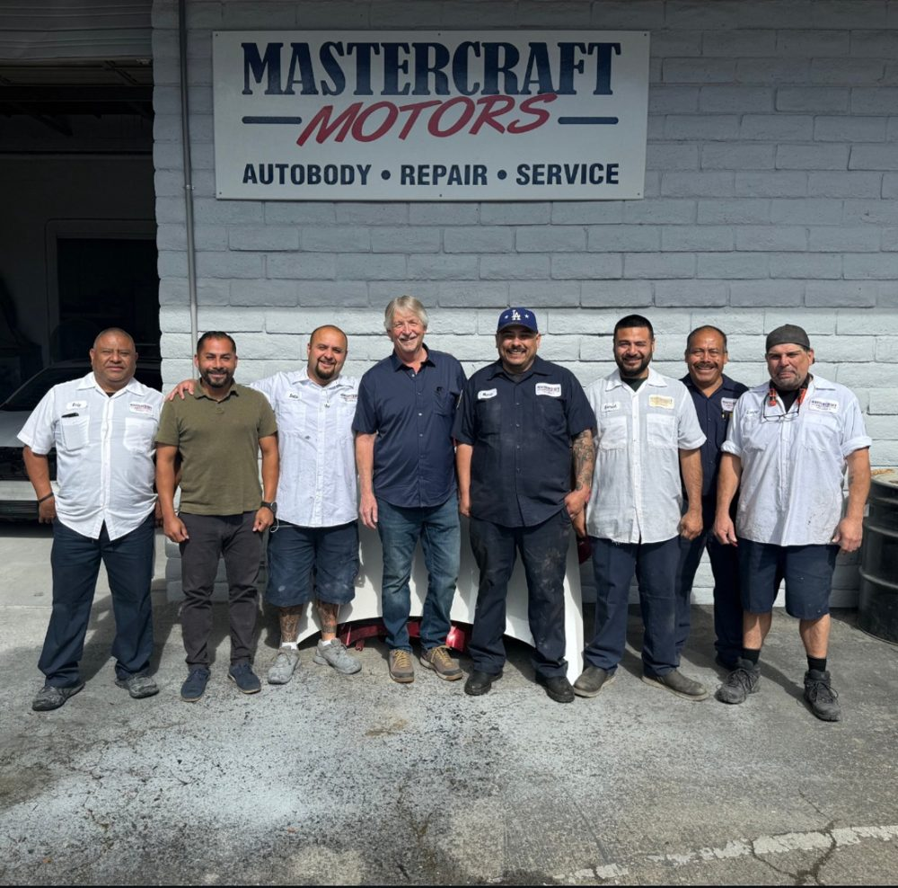
Mastercraft Motors is a family-owned Santa Barbara auto body shop, in business since 1974. The same owner also ran a European import mechanic operation out of the same location, which is where the digital presence started working against itself.
Google was treating the two sides of the business as one. A shared address, overlapping business-profile categories, and shared contact details meant someone searching for a mechanic could land on the body shop, and reviews and services bled between the two listings. That confusion quietly cost leads. On top of it, customer records were scattered across different places with no system to bring past customers back.
Untangled the two businesses
Split the auto body and European mechanic sides into distinct brands, each with its own Google Business Profile, primary category, phone number, and landing page, then built consistent citations across the directories that anchor a business in local search. This stops Google merging them, and sets the mechanic side up to run its own ads later instead of paying to compete with itself.
Built reputation and retention
Stood up a CRM with missed-call text-back, two-way SMS, and review automation, then imported and consolidated the scattered customer lists into one place. Added automated drip campaigns over SMS and email, the reminders and rebooking nudges that turn a one-time repair into a recurring customer.
Kept the presence consistent
Produced steady, on-brand social graphics and posts, and built a clean landing page for each brand so paid traffic has somewhere real to go.
The two brands now surface for their own searches instead of cannibalizing each other, which protects leads that were slipping away. Reputation and follow-up run on autopilot, past customers sit in one database with automated outreach bringing them back, and acquisition cost drops because the shop earns organic search and reactivates existing customers rather than paying for every new lead. The mechanic side is now positioned to run Google Ads profitably when the client is ready.
Two brands under one roof? There's a cleaner way to run it.
Mastercraft on the feed.
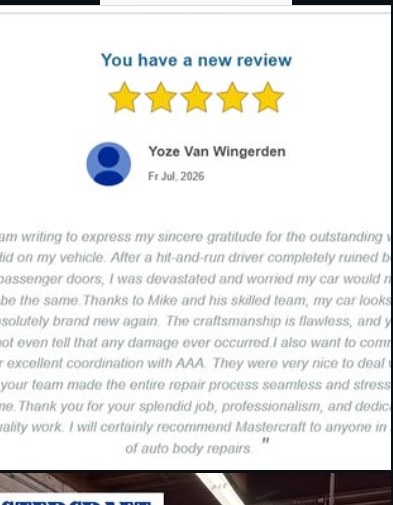
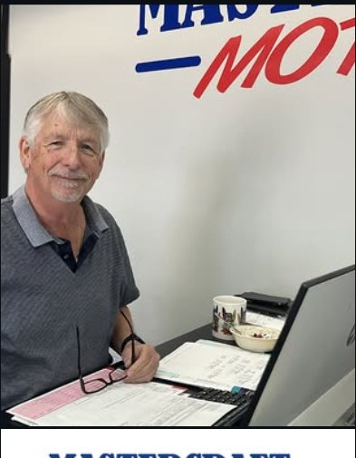
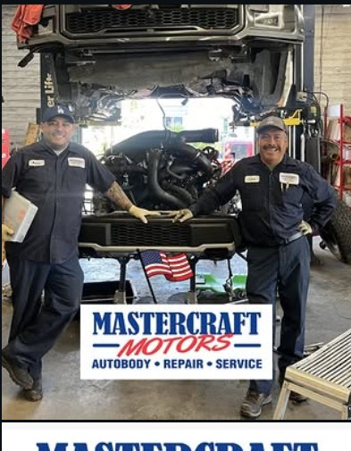
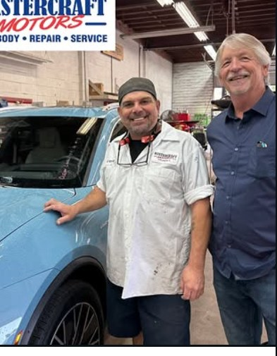
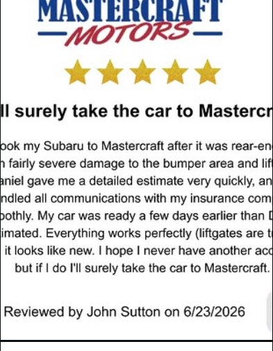
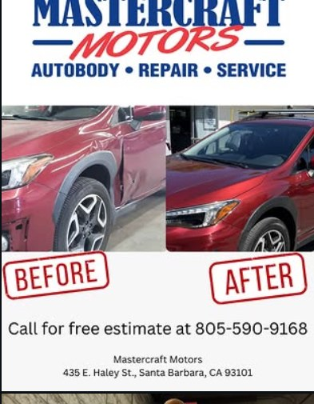
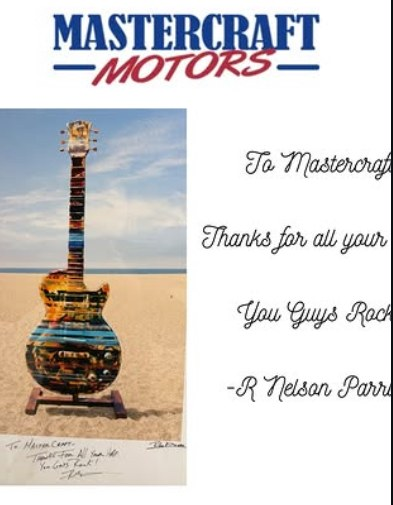
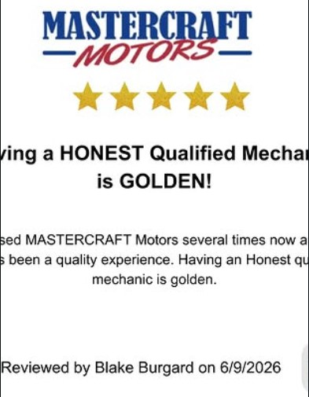
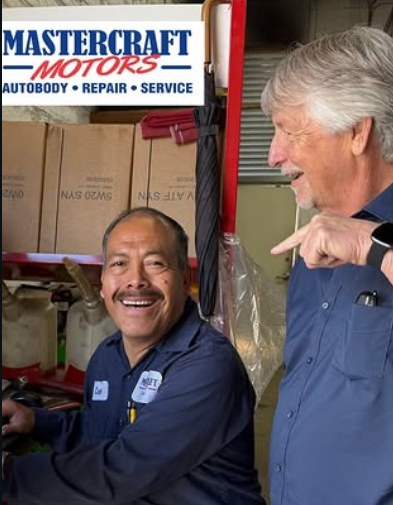
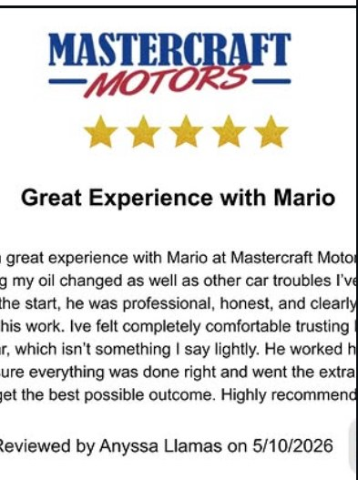
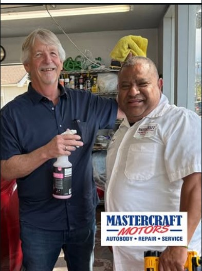
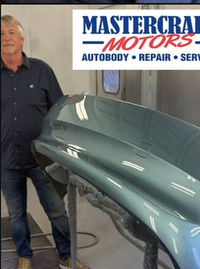
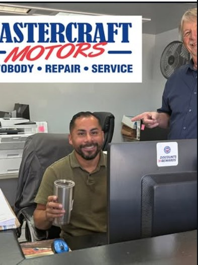
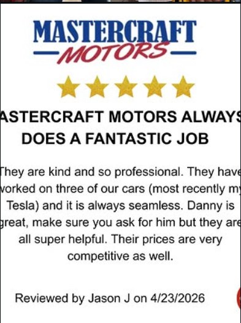